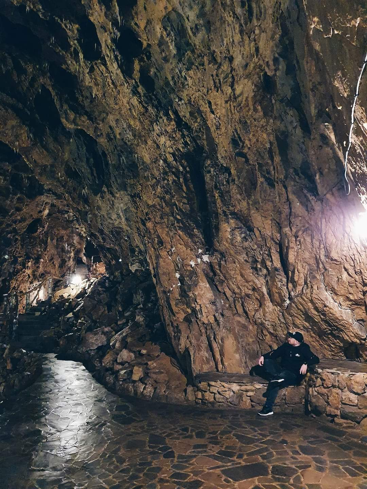

Lina and I couldn't contain our excitement as we touched down in Vilnius, Lithuania's enchanting capital. The city's blend of old-world charm and modern dynamism was captivating. We marveled at the grand Vilnius Cathedral, were spellbound by the panoramic views from Gediminas Tower, and lost ourselves in the narrow lanes of the old town.
Our taste buds were treated to traditional Lithuanian delights like 'cepelinai', and our evenings were filled with the city's vibrant nightlife. But it was Užupis, the bohemian district with its unique constitution and art-filled streets, that stole our hearts.
As we left Lithuania, we carried with us memories not just of a beautiful city, but of the cherished moments we shared together.

The cool Belgian air was a stark contrast to the deep warmth of the hidden cave I was about to explore. This wasn't just any cave – it was a relic from WW2, rumored to have sheltered resistance fighters and held secrets of the past.
With each step underground, the weight of history pressed on me. The narrow passages whispered tales of bravery, while the remnants of makeshift camps told of long, hopeful waits in the dark. Shadows seemed to dance, recreating scenes from a time when the world was at war.
Emerging hours later, I felt a deep connection to the past, grateful for the journey and the stories the cave had silently shared. Back to the top